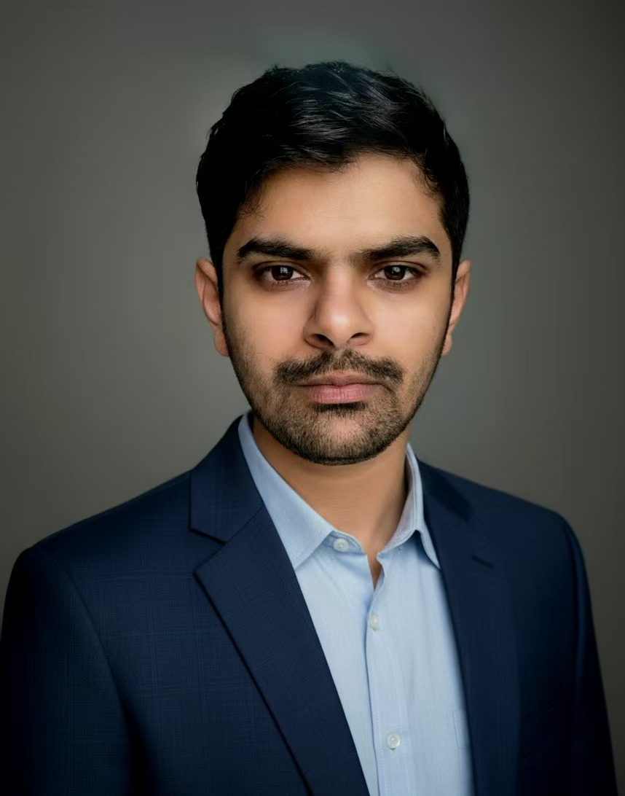

AI Engineer & Computer Science Researcher
A dedicated Computer Science postgraduate with over five years of academic and industry experience. Skilled in software-defined systems, edge computing, and their integration for human-centred, scalable smart healthcare. Proactive, analytical, and motivated to pursue impactful research, bridging theory and real-world innovation.
CGPA: 3.35/4.00
Thesis: Detection of Distributed Denial-of-Service (DDoS) Attacks in Software Defined Networks.
CGPA: 3.44/4.00
Thesis: Design and Assessment of a User-Friendly Interface for an Online Ecommerce Platform.
Developing a physics-guided framework that models heat transfer and thermal recovery dynamics captured by sparse wearable thermal sensors to non-invasively characterize breast tumors.
Designing a lightweight spatio-temporal Siamese network that compares bilateral thermal signatures from smart wearable sensors for on-device breast cancer detection.
Collaborated on a master's thesis project developing a novel gaze estimation framework that leverages self-supervised learning to dramatically reduce annotation requirements. GitHub
Developed a knowledge-distillation framework that transfers an 89.8M-parameter DINOv2 gaze teacher into microcontroller-scale students (TinyViT 2.86M, TinyCNN 0.18M), reaching 6.13° and 6.82° mean angular error on MPIIGaze, with TinyCNN deployed on bare-metal ESP32-S3. GitHub
Developed a lightweight network intrusion detection system that distills a union teacher (169K parameters) trained on multiple datasets into a 2.7K-parameter student (13.5 KB of weights) for edge deployment, reaching test AUC of 0.9985 on CIC-IDS2017, 0.9493 on ToN-IoT, and 0.7392 on UNSW-NB15 with 33.5-microsecond batch-1 inference, deployed on ESP32-C3. GitHub
Collaborated on a master's thesis research project building an advanced deep-learning-based eye-tracking system with intelligent glare compensation for robust detection of the pupil, iris, and corneal glint under challenging lighting conditions. GitHub